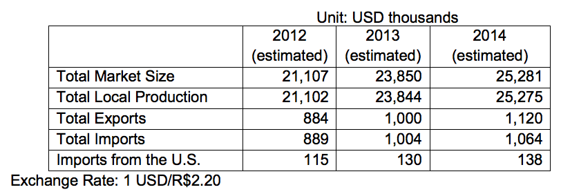

Total Market Size = US$16.530 billion
Data Source: Brazilian Association of the Cosmetic Toiletry and Fragrance Industry (ABHIPEC)
Total Local Production: US$16.527 billion
Total Exports: US$693 million
Total Imports: US$696 million
Imports from U.S.: US$90 million
Between 2012 and 2013, both local production and exports of Brazilian beauty and cosmetics goods grew about 13 percent, signaling both opportunity for and strong domestic competition against U.S. exporters. These impressive results attest to the vitality of Brazil’s domestic beauty/cosmetics sector, the growing demand by Brazilian consumers for high-quality, innovative imported products, and the country’s emerging dominance in key foreign markets.
Besides high demand in Brazil’s domestic market, the country’s emerging middle class is gaining economic and political power. More recently, the GOB’s investment in social programs is contributing to the country’s role as worldwide industry leader and, most notably, fueling women and minority entrepreneurship. High technology standards, a strong “Brazil brand” cache, and highly-qualified industry professionals are also contributing to the country’s world-leader status in this dynamic sector.
Like most foreign markets, Brazil requires that U.S. exporters have a high degree of quality and management certification, such as ISO 9000 and ISO 14000. In addition, U.S. suppliers must demonstrate clear concern for social responsibility and environmental conservation. There is an on-going demand for natural and organic products, packaged in recyclable materials.
Hair care products are the largest segment of the Brazilian cosmetics and toiletries market. Shampoo sales, both imported and locally made, constitute about 50 percent of domestic sales; they are divided evenly between Brazilian and well-known multinational suppliers.